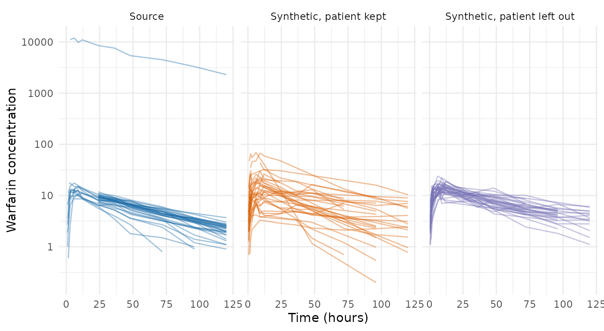

Privacy Protections in the PMX Model Generator
Andrew Stein
Source:vignettes/articles/pmxmodel-privacy.Rmd
pmxmodel-privacy.RmdIntroduction
The pharmacometric (PMX) model generator,
synpmx_model(), fits a set of models to a study and then
simulates from these models a synthetic dataset, for the purpose of
transferring the data outside the GxP environment, but staying within
the secure system ecosystem. The models that are fit are:
- PopPK model fit to the PK data
- PD model fit to each PD observation type, pooled across cohorts
- An attendance model, to allow for simulation of missed visits
- A dosing model to simulate dose reductions and missed doses
This article clarifies what information from a study (via the model parameters) can leave the GxP computing environment, and what risk remains. While this approach offers many privacy protections which reduce how much any one patient can impact the synthetic data, the algorithm does not offer a formal differential privacy (DP) guarantee.
Why this method does not formally guarantee DP
DP limits how much any one person’s data can change what is released, whatever else an attacker knows1. A DP mechanism achieves this limit by adding calibrated noise to every released number. A generation method that guarantees DP is not used here for three key reasons:
- The fingerprint holds what the study’s own reports ultimately make public, more coarsely. A population PK report gives each typical value, its between-subject variability and the residual error, with their standard errors, and regulators ask for exactly that2,3. The study’s main publication gives each arm’s baseline characteristics and how many patients discontinued4. This fingerprint holds the same kinds of numbers at 1-2 significant figures, pooled over the arms and the visits.
- Any attacker already holds the answer they are seeking. Membership inference needs the candidate’s own data (e.g. patient characteristics, concentrations, visit attendance, dose changes) to assess whether that candidate was in the study. Outside the company sponsoring the study, this information exists only at the sites and in routine care of the patient. Thus whoever holds a candidate’s trial record knows the candidate was in the trial, and learning it again from the fingerprint discloses nothing.
- DP at small cohort sizes replaces the study with noise, as the appendix computes, and for this use noise is worse than no data. The calibrated generator’s evaluation finds a DP fingerprint at phase 1 sizes worse than generating from a public prior, which reads nothing.
What the Generator Releases
A population PK/PD model is a short list of numbers: a
typical value for each parameter, such as clearance; a
between-subject variance for each, which says how far
patients spread around the typical value; and a residual
error, the scatter of single measurements around a patient’s
own curve. synpmx_model() estimates these with
nlmixr2.
The generator also summarizes the study as it was carried out: the number of patients in each treatment group (arm), each arm’s planned dose schedule, how often doses were reduced, skipped or stopped, the share of scheduled visits attended for each kind of measurement, the distribution of each baseline covariate such as body weight, age or sex, and how often each level of a yes/no or graded endpoint was recorded. Each of these is one set of numbers for the whole study, pooled over the arms and the visits.
These numbers are the fingerprint, and they are all that leaves the environment that holds the study. Synthetic data is simulated from the fingerprint and random numbers alone, so it discloses nothing the fingerprint does not. The article on the PMX model study fingerprint lists every number in a study fingerprint.
The Privacy Protections
1. No Patient Record Leaves the Study
The fingerprint holds numbers about the population and about arms,
and no patient record, identifier or per-patient estimate. Each
patient’s estimated random effects are used during estimation and
dropped from the fingerprint, and synthetic subject IDs are new numbers
that cannot collide with real ones. model_fingerprint()
builds the fingerprint from an allowlist of the fields generation reads,
so the diagnostics on the fit, and any field added to it later, stay
behind.
2. No Single Patient’s Value is Used
Every quantity that would naturally have been one patient’s value is computed another way:
| Quantity | How it’s computed |
|---|---|
| Lowest value generated, used for LOQ where no assay limit is declared | half the lowest value at least three patients reached, rounded down to 1, 2 or 5 times a power of ten |
| Reference weight for body-weight scaling | the median to one significant figure |
| Planned dose, where patients’ doses differ | the arm’s mean to two significant figures |
| Continuous covariates | a trimmed mean and SD after the highest and lowest 5% of patients are set aside |
3. At Least Three Patients Behind Every Frequency
If only one or two patients in a study missed a visit or had a dose reduced, any frequency describing that event reveals something about them. The same is true when all but one or two patients had it: 30 of 32 patients attending also describes the 2 who did not. Statistical disclosure control (SDC), the discipline that protects published statistical tables, handles this with a threshold rule: publish a count only where at least k people stand behind it5. Here k is 3, and the rule is applied to both groups, the patients who had the event and those who did not:
- an arm, visit, dose level or planned cycle is kept only where at least three patients reached it;
- an attendance rate is set to 1, and a dose-change rate to 0, where fewer than three patients missed a visit or changed a dose;
- a category level, of a covariate or of a graded endpoint, held by fewer than three patients is folded into the most common level, and is not written into the description of the table to generate;
- a value copied onto an arm from a
keepcolumn, held by fewer than three of the arm’s patients, is written as missing.
The two thresholds are min_arm_patients and
min_category_patients, both 3 by default.
The threshold stops a frequency from singling out one or two patients. It does not stop membership inference, which adds up small signals across many frequencies; pooling is what weakens that.
4. Covariate Summaries Without Their Extremes
A continuous covariate is summarized by a mean and SD taken after the highest and lowest 5% of patients are set aside, with the SD corrected for the trimming. No single extreme patient, such as one weighing 250 kg, can then move the summary. This is the trimmed mean of robust statistics6, and it is also how DP mean estimators bound one person’s influence7.
5. One Significant Figure
Every released PK and PD estimate is rounded to one significant figure; covariate summaries are rounded to two, since one would put a mean height of 172 cm at 200. One significant figure moves an estimate by 9% on average and 33% at worst. The benefit to rounding is that the released value is usually the same whether a given patient is in the study or not, because a one-figure step is about as wide as an estimate’s sampling variation.
6. How Far One Patient Moves Each Estimate
For each released estimate, estimation measures how far it would move if each patient in turn were left out. This is local sensitivity, the study-specific version of DP’s sensitivity1, and in regression the same idea is Cook’s distance8. How the move is measured depends on the estimate:
- PK parameters are approximated from each patient’s random effects , without refitting the population model. A typical value on the log scale sits close to the mean of the patients’ individual log parameters, so leaving out patient moves it by about . A between-subject variance sits close to the mean of the squared random effects, so leaving out patient scales it by , with . Shrinkage pulls every random effect toward zero and makes this reading understate the move, so it is reported beside it.
- The PD baseline and its between-subject spread, and the covariate summaries, are recomputed exactly with the patient left out.
- The other PD shape parameters (a slope, or a plateau and a rate) are refitted with the patient left out.
A move of 15 or more triggers a review, and 30 or more fails. Each move is measured on a scale that reads like a percentage:
- A typical value moves by its percent change: a clearance going from 10 to 11.5 L/h is a move of 15.
- A between-subject spread moves by the change in its SD on the log scale, in hundredths, which is close to a change in CV%: an SD going from 0.30 to 0.45 is a move of 15.
- A covariate’s mean or SD moves by the change as a percent of the covariate’s SD.
- A PD shape parameter must clear a second bar as well. A slope or rate can sit near zero, and then any patient changes it by hundreds of percent. So a move counts only if it is also large against the estimate’s own uncertainty: at least one standard error for a review, and two to fail. The standard error comes from the same leave-one-out refits: the spread of the estimates refitted without each of the other patients.
A patient who moves any estimate by 15 or more is left out of every estimate, and estimation runs again. A patient flagged for moving one PD slope is left out of the PK fit, every PD fit and the covariate summaries alike. The patient stays in the dosing, visit and arm models, so cohort and arm sizes do not change.
Estimation then runs in rounds. Each round leaves out every patient the previous round flagged, refits, and reads the moves again, because with the most influential patients gone the next ones become the most influential9. Rounds stop when nobody is flagged, or when leaving out the newly flagged patients would take more than a tenth of the cohort; in that case those patients stay in, and the check reports their move as a review or a failure.
Patients left out are named on the console of the GxP system only.
Privacy Checking Function
model_privacy_checks(fit) verifies the protections on a
fit; a fingerprint carries the verdicts of P4 and P5.
| Check | Question | Passes when |
|---|---|---|
| P1 | No per-patient table is released | the fingerprint holds only population- and arm-level fields |
| P2 | No source identifier is released | no source subject ID appears in the fingerprint |
| P3 | No single patient’s value is released | protection 2 holds |
| P4 | Every released frequency rests on at least three patients | protection 3 holds for every frequency |
| P5 | No single patient moves a released estimate far | every estimate moves less than 15 (protection 6) |
Three Constructed Test Cases
Each case is warfarin with one or more patients changed,
fitted once and stored with the package. None is a real study.
warfarin <- as.data.frame(nlmixr2data::warfarin)
warfarin$ntime <- warfarin$time
roles <- pmx_roles(
id = "id", time = "time", nominal_time = "ntime", dv = "dv", amt = "amt",
evid = "evid", dvid = "dvid", covariates = c("wt", "age", "sex")
)
patients <- sort(unique(warfarin$id))
misdosed <- warfarin
on_cp <- misdosed$id == patients[[5L]] & misdosed$evid == 0 &
misdosed$dvid == "cp"
misdosed$dv[on_cp] <- misdosed$dv[on_cp] * 1000
extreme <- warfarin
extreme$wt[extreme$id == patients[[3L]]] <- 250
extreme$age[extreme$id == patients[[8L]]] <- 95
extreme$sex <- as.character(extreme$sex)
extreme$sex[extreme$id == patients[[12L]]] <- "not recorded"
extreme$sex <- factor(extreme$sex)
misdosed_fit <- synpmx_model_estimate(misdosed, roles, seed = 1)
misdosed_kept_fit <- synpmx_model_estimate(misdosed, roles, seed = 1,
drop_influential = FALSE)
extreme_fit <- synpmx_model_estimate(extreme, roles, seed = 1)A Patient Given a Thousand Times the Recorded Dose
One patient’s concentrations are a thousand times what the recorded
dose implies. Kept in with drop_influential = FALSE, the
patient fails P5:
kept_checks <- model_privacy_checks(misdosed_kept_fit)
as.data.frame(kept_checks)[, c("check", "verdict", "result")]
#> check verdict result
#> 1 P1 pass none
#> 2 P2 pass none
#> 3 P3 pass none
#> 4 P4 pass smallest group 5
#> 5 P5 FAIL largest: cp: v2 between-subject SD, 70.7 pointsBy default the patient is left out, and the checks pass:
misdosed_fit$privacy$left_out$patients
#> [1] 1
as.data.frame(model_privacy_checks(misdosed_fit))[, c("check", "verdict",
"result")]
#> check verdict result
#> 1 P1 pass none
#> 2 P2 pass none
#> 3 P3 pass none
#> 4 P4 pass smallest group 4
#> 5 P5 pass largest: cp: ka between-subject SD, 9.02 points; 1 left outKept, the patient’s exposure becomes between-subject variability and the synthetic patients spread wider than the source. Left out, they do not:
concentration <- function(data, label) {
rows <- data$evid == 0 & data$dvid == "cp" & data$dv > 0
data.frame(dataset = label, id = as.character(data$id[rows]),
time = data$time[rows], dv = data$dv[rows])
}
kept_synthetic <- suppressWarnings(
synpmx_model_generate(misdosed_kept_fit, seed = 11))
synthetic <- suppressWarnings(synpmx_model_generate(misdosed_fit, seed = 11))
plotted <- rbind(concentration(misdosed, "Source"),
concentration(kept_synthetic, "Synthetic, patient kept"),
concentration(synthetic, "Synthetic, patient left out"))
plotted$dataset <- factor(plotted$dataset, levels = unique(plotted$dataset))
ggplot2::ggplot(plotted, ggplot2::aes(time, dv, group = id,
colour = dataset)) +
ggplot2::geom_line(alpha = 0.4) +
ggplot2::facet_wrap(~dataset) +
ggplot2::scale_y_log10() +
ggplot2::scale_colour_manual(values = c(unname(comparison_colours),
"#7570B3")) +
ggplot2::labs(x = "Time (hours)", y = "Warfarin concentration") +
ggplot2::theme_minimal() +
ggplot2::theme(legend.position = "none")
Extreme Covariates
One patient weighs 250 kg and another is 95 years old. Trimming sets both aside, so the covariate summaries barely change:
summary_of <- function(model) {
data.frame(covariate = c("wt", "age"),
geometric_mean = exp(c(model$wt$meanlog, model$age$meanlog)),
sd_log = c(model$wt$sdlog, model$age$sdlog))
}
both <- rbind(cbind(summary_of(fit$covariates), study = "warfarin"),
cbind(summary_of(extreme_fit$covariates),
study = "with the two extreme patients"))
both <- both[order(both$covariate != "wt"), ]
rownames(both) <- NULL
both
#> covariate geometric_mean sd_log study
#> 1 wt 69 0.18 warfarin
#> 2 wt 70 0.19 with the two extreme patients
#> 3 age 29 0.34 warfarin
#> 4 age 29 0.36 with the two extreme patientsA Category Nobody Else Holds
A third patient has a sex recorded as a level no other patient holds. The level is dropped, so no synthetic patient can carry it:
extreme_fit$covariates$sex$levels
#> [1] "female" "male"
levels(extreme_fit$schema$prototypes$sex)
#> [1] "female" "male"The Checks Across the Public Studies
The checks on every stored fit of the public-data
evaluation. left_out counts the patients left out for
moving an estimate by 15 or more, and largest is the
largest move among those that remain; the same patient moves a
twelve-patient fit about five times as far as a sixty-patient one.
files <- c(warfarin = "warfarin-model-fit.rds",
theo_md = "theo-md-model-fit.rds",
mad = "mad-model-fit.rds",
case1_pkpd = "case1-pkpd-model-fit.rds",
wbcSim = "wbcsim-model-fit.rds",
mavoglurant = "mavoglurant-model-fit.rds",
nimoData = "nimo-model-fit.rds",
pheno_sd = "pheno-model-fit.rds",
mixroute_sim = "mixroute-sim-model-fit.rds",
onc_sim = "onc-sim-model-fit.rds")
rows <- lapply(names(files), function(study) {
one <- stored_fit(files[[study]])
if (!inherits(one, "pmx_fitted_model")) return(NULL)
checks <- model_privacy_checks(one)
verdicts <- stats::setNames(checks$verdict, checks$check)
data.frame(study = study, patients = one$n_source,
left_out = if (is.null(one$privacy$left_out)) 0L else
one$privacy$left_out$patients, t(verdicts),
largest = sub("^largest: (.*?)(; [0-9]+ left out)?$", "\\1",
checks$result[checks$check == "P5"], perl = TRUE),
check.names = FALSE)
})
knitr::kable(do.call(rbind, rows[!vapply(rows, is.null, logical(1))]))| study | patients | left_out | P1 | P2 | P3 | P4 | P5 | largest |
|---|---|---|---|---|---|---|---|---|
| warfarin | 32 | 0 | pass | pass | pass | pass | pass | cp: ka between-subject SD, 9.84 points |
| theo_md | 12 | 0 | pass | pass | pass | pass | pass | DV: ka typical value, 9.92 % |
| mad | 60 | 1 | pass | pass | pass | pass | pass | PD - Continuous between-subject SD, 10.3 points |
| case1_pkpd | 180 | 0 | pass | pass | pass | pass | pass | PD - Continuous between-subject SD, 6.44 points |
| wbcSim | 45 | 1 | pass | pass | pass | pass | pass | DV between-subject SD, 2.39 points |
| mavoglurant | 120 | 0 | pass | pass | pass | pass | pass | DV: v2 between-subject SD, 2.09 points |
| nimoData | 12 | 0 | pass | pass | pass | pass | pass | DV: v2 between-subject SD, 12.7 points |
| pheno_sd | 59 | 0 | pass | pass | pass | pass | pass | APGR SD on the log scale, 4.32 points |
| mixroute_sim | 90 | 0 | pass | pass | pass | pass | pass | DV: ka between-subject SD, 4.25 points |
| onc_sim | 200 | 0 | pass | pass | pass | pass | pass | SLD slope, 0.635 SE |
Outstanding Risks
The ways a fingerprint can still disclose something about a patient:
- An attacker who holds a candidate’s own trial data can infer membership. Such an attacker can check whether the released model fits the candidate slightly better than it would fit someone outside the study. In simulation the advantage is small: given one member and one non-member, the attacker picks the member 53% of the time in a 60-patient study when its population parameters come from another study (20% off), and 70% of the time in a 12-patient study when it knows the population’s true parameters, where 50% is a coin flip. The appendix gives the details. Only noise would reduce it.
- There is no formal guarantee, so an attacker who knows every other patient is not stopped. They can compute the exact effect of the one patient they do not know. Only a DP mechanism stops them.
- Fingerprints compose. Two fingerprints from overlapping data, such as an interim and a final analysis, differ by exactly what the patients between them contributed. Nothing here accounts for that.
-
Three patients is the smallest threshold in common
use. A stricter rule needs
min_arm_patientsandmin_category_patientsraised. - The influence reading is approximate, and its thresholds are empirical. They were set so that ordinary patients pass and a gross data error fails, not derived from a privacy target. Shrinkage makes it understate a patient’s effect on a PK parameter. Two kinds of released estimate are not checked at all: the residual errors for PK and PD, and the typical value of a PK parameter fitted without between-subject variability, such as a bioavailability.
- Rarity in the world is not measured. A covariate level many patients in this study hold can still identify someone if few people hold it.
Appendix: Membership Inference Against the Fingerprint
A membership-inference attack scores each candidate by how far the fingerprint has moved, away from what the population would give, toward the candidate’s own values. Members score higher on average than non-members, and the attack’s strength is the area under the curve (AUC): the probability that a randomly chosen member scores above a randomly chosen non-member, where 0.5 is chance and 1 is certain identification. The attacker holds the candidate’s own measurements and reference values for the population, and does not know the other patients. Membership inference against the PMX model fingerprint works through the calculation. Three findings:
- Cohort size decides the population model’s exposure. With exact reference values the AUC falls from 0.70 at 12 patients to 0.56 at 60; with reference values off by 20%, to 0.59 and 0.53.
- One significant figure lowers it; two would not. Rounding to one figure lowers the AUC by up to 0.05, while two figures move it by at most 0.001.
- A table per visit would be the most exposed part of a fingerprint, so the fingerprint holds none. A share of patients sampled at each of 20 visits gives 0.83 with 10 patients behind each share and 0.62 with 100, and the three-patient floor moves it by at most 0.01. One attendance rate per endpoint is about as exposed as one visit’s share: 0.67 for five endpoints behind 10 patients.
An AUC averages over members, and the most exposed member is the one far from the typical values, which is what protection 6 reads. The membership-inference literature reports success against such outliers separately for this reason10,11, and synthetic data from generative models leaves them exposed12.
Appendix: The Noise a DP Guarantee Needs in a Small Study
Two routes give a population model a DP guarantee. The per-patient
route estimates each patient’s parameters from that patient’s own
measurements, clips them to a public range and releases their mean with
noise, which is how synpmx_calibrated() releases its one
number. Subsample-and-aggregate splits the patients into disjoint groups
of about twenty, fits the model in each, and releases the mean of the
groups’ clipped estimates with noise13,14.
With
split evenly over d released numbers, each clipped to a public
range spanning sixteenfold on the log scale (fourfold either side of a
prior, as synpmx_calibrated() uses), each number gets
Laplace noise of scale
on the log scale by the per-patient route, and
with
groups by subsample-and-aggregate. The table gives the median fold error
of one released number,
,
and the noise’s spread against the uncertainty an estimate already has
from sampling, for a between-subject SD of 0.3:
span <- log(16)
dp_scale <- function(patients, released) released * span / patients
dp_fold <- function(patients, released) {
exp(log(2) * dp_scale(patients, released))
}
dp_over_sampling <- function(patients, released) {
sqrt(2) * dp_scale(patients, released) / (0.3 / sqrt(patients))
}
grid <- expand.grid(patients = c(30, 60, 200, 1000), released = c(11, 30))
fold_text <- function(x) {
ifelse(x > 100, "over 100-fold", sprintf("%.2f-fold", x))
}
knitr::kable(data.frame(
patients = grid$patients,
released_numbers = grid$released,
per_patient_median_error = fold_text(dp_fold(grid$patients, grid$released)),
noise_over_sampling_error = sprintf("%.0f times", dp_over_sampling(
grid$patients, grid$released)),
subsample_median_error = fold_text(dp_fold(grid$patients / 20,
grid$released))))| patients | released_numbers | per_patient_median_error | noise_over_sampling_error | subsample_median_error |
|---|---|---|---|---|
| 30 | 11 | 2.02-fold | 26 times | over 100-fold |
| 60 | 11 | 1.42-fold | 19 times | over 100-fold |
| 200 | 11 | 1.11-fold | 10 times | 8.28-fold |
| 1000 | 11 | 1.02-fold | 5 times | 1.53-fold |
| 30 | 30 | 6.83-fold | 72 times | over 100-fold |
| 60 | 30 | 2.61-fold | 51 times | over 100-fold |
| 200 | 30 | 1.33-fold | 28 times | over 100-fold |
| 1000 | 30 | 1.06-fold | 12 times | 3.17-fold |
Eleven numbers are a two-compartment population model alone, and
thirty a whole fingerprint. At 60 patients the per-patient route leaves
half of the population model’s numbers off by more than 1.42-fold, with
noise 19 times the sampling error each estimate already carries, and a
whole fingerprint off by 2.6-fold. At 30 patients the population model
alone is off by 2.0-fold. Even at 1,000 patients the noise is 4.5 times
the sampling error. Subsample-and-aggregate, which keeps the fit as it
is, is unusable below about a thousand patients. Gaussian noise with
tighter accounting grows with the square root of the count rather than
the count, and does not change this picture at these cohort sizes. At
the 12 to 200 patients this generator sees, a DP fingerprint would say
less about the study than a public prior does. Neither route is
implemented beyond the one number synpmx_calibrated()
releases.